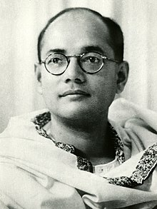

Tribute to Subhash Chandra Bose

Subhash Chandra Bose(23 rdJanuary 1897-18thAugust 1945) was an Indian antionalist whose defiant patriotism made him a hero in india, but whose attempts during World War II to rid India of British rule with the help of Nazi Germany and IMperial Japan left a troubled legacy.
He was a key figure in the Indian independence movement and is best known for his role as Netaji(Hindi : "Respected Leader") in establishing the Azad Hind Fauj (Indian Nationa Army) to fight against British rule in India.
Subhash Chandra Bose's contributions to India's struggle for independence continue to inspire generations.
Early Life
- birth: Subhas Chandra Bose was born on 23 January 1897 in Cuttack, Orissa Division, Bengal Province, to Janakinath Bose and prabhabati Devi,
- Education:He studied at Presidency collage in Culcutta and letter in Fitzwilliam collage, Cambridge.
- India National Congress:Bose was influenced by Swami Vivekananda's teaching and joined the
INdian National CongressIndian independence movement
He become the president of the Indian National Congress in 938 and 1939.HE become a prominent leadeer in the struggle for independence.
Azad Hind Fauj
- Bose's leadership
- Bose formed the Azad HInd Fauj in 1942 in Southeast Asia with the help of the Japanese.
- He led the INA in the battles against the Britishforces in Imphal and Kohima.
- Bose's strategic acumen and leadership skill were instrumental in boosting the morale of his troops.
- Impact
- Bose's efforts played a significant role in the eventual independence of India.
learn more about Subhash Chandra Bose
"Give me , blood and I shall grive you freedom!